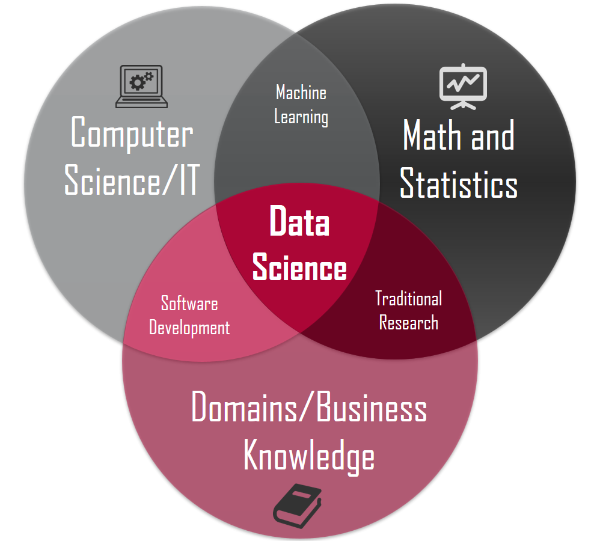

66.数据分析概述
数据分析概述¶
当今世界对信息技术的依赖程度在不断加深，每天都会有大量的数据产生，我们经常会感到数据越来越多，但是要从中发现有价值的信息却越来越难。这里所说的信息，可以理解为对数据集处理之后的结果，是从数据集中提炼出的可用于其他场合的结论性的东西，而从原始数据中抽取出有价值的信息的这个过程我们就称之为数据分析，它是数据科学工作的一部分。

定义：数据分析是有针对性的收集、加工、整理数据并采用统计、挖掘等技术对数据进行探索、分析、呈现和解释的科学。
数据分析师的职责和技能栈¶
HR在发布招聘需求时，通常将数据工程、数据分析、数据挖掘等岗位都统称为数据分析岗位，但是根据工作性质的不同，又可以分为偏工程的数据治理方向、偏业务的数据分析方向、偏算法的数据挖掘方向、偏开发的数据开发方向、偏产品的数据产品经理。我们通常所说的数据分析师主要是指业务数据分析师，很多数据分析师的职业生涯都是从这个岗位开始的，而且这个岗位也是招聘数量最多的岗位。业务数据分析师在公司通常不属于研发部门而属于运营部门，所以这个岗位也称为数据运营或商业分析，这类人员通常也被称为“BI工程师”。通常招聘信息对这个岗位的描述（JD）是：
- 负责相关报表的输出。
- 建立和优化指标体系。
- 监控数据波动和异常，找出问题。
- 优化和驱动业务，推动数字化运营。
- 找出潜在的市场和产品的上升空间。
根据上面的描述，作为业务数据分析师，我们的工作不是给领导一个简单浅显的结论，而是结合公司的业务，完成监控数据、揪出异常、找到原因、探索趋势等工作。作为数据分析师，不管是用 Python 语言、Excel、SPSS或其他的商业智能工具，工具只是达成目标的手段，数据思维是核心技能，从实际业务问题出发到最终发现数据中的商业价值是终极目标。数据分析师在很多公司只是一个基础岗位，精于业务的数据分析师可以向数据分析经理或数据运营总监等管理岗位发展；对于熟悉机器学习算法的数据分析师来说，可以向数据挖掘工程师或算法专家方向发展，而这些岗位除了需要相应的数学和统计学知识，在编程能力方面也比数据分析师有更高的要求，可能还需要有大数据存储和处理的相关经验。数据治理岗位主要是帮助公司建设数据仓库或数据湖，实现数据从业务系统、埋点系统、日志系统到分析库的转移，为后续的数据分析和挖掘提供基础设施。数据治理岗位对 SQL 和 HiveSQL 有着较高的要求，需要熟练的使用 ETL 工具，此外还需要对 Hadoop 生态圈有一个较好的认知。作为数据产品经理，除了传统产品经理的技能栈之外，也需要较强的技术能力，例如要了解常用的推荐算法、机器学习模型，能够为算法的改进提供依据，能够制定相关埋点的规范和口径，虽然不需要精通各种算法，但是要站在产品的角度去考虑数据模型、指标、算法等的落地。
以下是我总结的数据分析师的技能栈，仅供参考。
- 计算机科学（数据分析工具、编程语言、数据库）
- 数学和统计学（数据思维、统计思维）
- 人工智能（机器学习中的数据挖掘算法）
- 业务理解能力（沟通、表达、经验）
- 总结和表述能力（商业PPT、文字总结）
数据分析的流程¶
我们提到数分析这个词很多时候可能指的都是狭义的数据分析，这类数据分析主要目标就是生成可视化报表并通过这些报表来洞察业务中的问题，这类工作一般都是具有滞后性的。广义的数据分析还包含了数据挖掘的部分，不仅要通过数据实现对业务的监控和分析，还要利用机器学习算法，找出隐藏在数据背后的知识，并利用这些知识为将来的决策提供支撑，具备一定的前瞻性。
基本的数据分析工作一般包含以下几个方面的内容，当然因为行业和工作内容的不同会略有差异。
- 确定目标（输入）：理解业务，确定指标口径
- 获取数据：数据仓库（SQL提数）、电子表格、三方接口、网络爬虫、开放数据集等
- 清洗数据：包括对缺失值、重复值、异常值的处理以及相关的预处理（格式化、离散化、二值化等）
- 数据透视：排序、统计、分组聚合、交叉表、透视表等
- 数据呈现（输出）：数据可视化，发布工作成果（数据分析报告）
- 分析洞察（后续）：解释数据的变化，提出对应的方案
深入的数据挖掘工作通常包含以下几个方面的内容，当然因为行业和工作内容的不同会略有差异。
- 确定目标（输入）：理解业务，明确挖掘目标
- 数据准备：数据采集、数据描述、数据探索、质量判定等
- 数据加工：提取数据、清洗数据、数据变换、特殊编码、降维、特征选择等
- 数据建模：模型比较、模型选择、算法应用
- 模型评估：交叉检验、参数调优、结果评价
- 模型部署（输出）：模型落地、业务改进、运营监控、报告撰写
数据分析相关库¶
使用 Python 从事数据科学相关的工作是一个非常棒的选择，因为 Python 整个生态圈中，有大量的成熟的用于数据科学的软件包（工具库）。而且不同于其他的用于数据科学的编程语言（如：Julia、R），Python 除了可以用于数据科学，还能做很多其他的事情，可以说 Python 语言几乎是无所不能的。
三大神器¶
- NumPy：支持常见的数组和矩阵操作，通过
ndarray类实现了对多维数组的封装，提供了操作这些数组的方法和函数集。由于 NumPy 内置了并行运算功能，当使用多核 CPU 时，Numpy会自动做并行计算。 - Pandas：pandas 的核心是其特有的数据结构
DataFrame和Series，这使得 pandas 可以处理包含不同类型数据的表格和时间序列，这一点是NumPy的ndarray做不到的。使用 pandas，可以轻松顺利的加载各种形式的数据，然后对数据进行切片、切块、处理缺失值、聚合、重塑和可视化等操作。 - Matplotlib：matplotlib 是一个包含各种绘图模块的库，能够根据我们提供的数据创建高质量的图表。此外，matplotlib 还提供了 pylab 模块，这个模块包含了很多像 MATLAB 一样的绘图组件。
其他相关库¶
- SciPy：完善了 NumPy 的功能，封装了大量科学计算的算法，包括线性代数、统计检验、稀疏矩阵、信号和图像处理、最优化问题、快速傅里叶变换等。
- Seaborn：seaborn 是基于 matplotlib 的图形可视化工具，直接使用 matplotlib 虽然可以定制出漂亮的统计图表，但是总体来说还不够简单方便，seaborn 相当于是对 matplotlib 做了封装，让用户能够以更简洁有效的方式做出各种有吸引力的统计图表。
- Scikit-learn：scikit-learn 最初是 SciPy 的一部分，提供了大量机器学习可能用到的工具，包括数据预处理、监督学习（分类、回归）、无监督学习（聚类）、模式选择、交叉检验等。
- Statsmodels：包含了经典统计学和经济计量学算法的库。